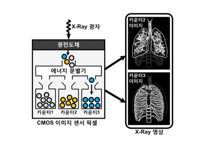

KAIST Top 10
KAIST Top 10
KAIST RESEARCH ACHIEVEMENTS
High definition multi-energy photon counting
X-Ray image sensor
Professor (Department of Electrical Engineering)
Gyu-Hyeong CHO
Summary
X-Ray in HD X-rays are frequently used in hospital examinations. Although X-ray machines help doctors conduct various examinations, they still often fail to play a decisive role in diagnosis. While the low resolution of X-rays is adequate for seeing large structures of the anatomy, it is difficult to examine detailed parts of the body. However, a path has recently opened up for an expansion of X-ray applications. An X-ray imaging sensor has been developed that can even capture cancer cells. Succinctly stated, X-ray imaging has entered the high definition era.
R&D Report
The paradigm of the medical market has shifted from treatment to diagnosis and prevention as more people are interested in well-being and healthy lifestyles. Rather than fixing what is broken, the trend is changing towards a favorable direction of maintaining health so that the body is not broken. X-ray are one of the most important tools for diagnosis and prevention. Because abnormalities and diseases appear inside the body first, X-ray imaging plays an important role in examining the body from the inside. However, the low resolution of X-ray imagine makes it difficult to diagnose all types of diseases. For instance, the identification of deadly diseases such as cancer with the naked eye often means that the disease has progressed, and it is often too late to treat it.
On the other hand, there are instances where the X-ray image reveals a problem when, in reality, there is nothing wrong with the body. Therefore, doctors use the X-ray as a reference tool rather than trust it completely. This is because X-ray imaging still dwells at the level of low definition (LD). But with high definition (HD) X-ray images, misdiagnoses can be reduced and very small cancer cells can be detected, thereby dramatically helping doctors in diagnoses.
After X-rays were first discovered, they were used in diverse fields such as medicine and non-destructive examination. They especially contributed to the fields of molecular biology and biochemistry for understanding the microstructures of molecules.James Watson (second from the right), Morris Wilkins (left), and Francis Crick (third from the left), who won the Nobel Prize in Physiology or Medicine for discovering the double helix structure of DNA, at the awards ceremony in Stockholm in December 1962.
Counting X-ray Photon Energy One by One to Acquire High Definition Images
The photoconductor, which acts as a film for X-ray imaging, releases as much energy as the amount of X-ray exposed. The stronger the X-ray material is penetrated to reach the photoconductor, the more energy is created. This energy is detected by an image sensor and is then converted into visual information. Conventional X-ray image sensors measure the amount of energy received in a given time and convert it into a voltage signal. Afterwards, the differences in the voltage signal for each part are used to create the X-ray image. Through this method, image resolution falls, because the moment the X-ray hits the photoconductor, information for each part lumps together and disappears, and peripheral noise disrupts the original image. Professor Gyu-Hyeong Cho of the Department of Electrical Engineering at KAIST and his research team mitigated the existing problems of X-ray imaging and developed a high-resolution imaging technology. In their research, Professor Cho and his research team did not convert the energy from the photoconductor into voltage information. Rather, they counted each energy packet one by one. Based on this count, an X-ray image was produced. By using this method, the origin of each energy packet can be differentiated, thereby ignoring peripheral noise. Hence, the quality of the image becomes greatly enhanced. In addition, the newly developed image sensor can differentiate and categorize the energy band of the X-ray photons used in the scan, thereby creating a multi-energy X-ray image. By applying image processing technology to the multi-energy image, bone and organ images can be separately acquired. Furthermore, Professor Cho and his research team were able to greatly reduce the pixel size of the image sensor by utilizing their world-class CMOS circuit design technology. Literally, they were able to develop HD X-ray imaging. Also, the sensitivity of the image sensor was greatly enhanced through low noise circuit design technology. Energy required for image formation was also reduced, hence greatly reducing harmful exposure.
Implications and Future Prospects
By providing a more accurate HD X-ray image, the X-ray image sensor developed by Professor Cho and his research team will dramatically reduce misdiagnoses by doctors. This new method will enable the possibility of accurate differentiation to contribute to early diagnosis and treatment. Furthermore, the acquisition of this high-level technology is expected to immensely help domestic companies develop technology to replace expensive imported medical imaging devices.
 Fig 2. The basic concept of multi-energy X-ray. A multi-energy discriminator categorizes the energy packets that result from the photoconductor and can save them based on their different bandwidths. Through this, one scan can produce multiple images.
Fig 3. The core component of the multi-energy X-ray:
a CMOS image sensor chip
Publication
ㆍH-S. Kim, S-W. Han, J-H. Yang, S. Kim, Y. Kim, S. Kim, D-K. Yono, J-S. Lee, J-C. Park, Y. Sung, S-D. Lee, S-T. Ryu, and G-H. hCo, "A Sampling-Based 128x128 Direct Photon-Counting X-Ray Image Sensor with 3 Energy Bins and Spatial Resolution of 60um/pixel", IEEE International Solid-State Circuits Conference (ISSCC) 2012.